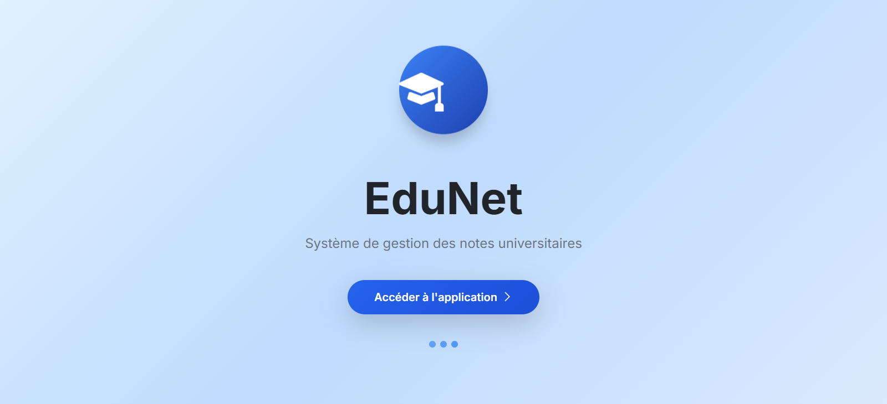
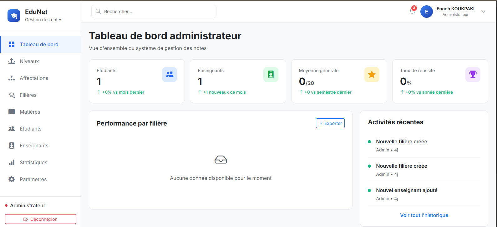

Aperçu du Projet

Page de démarrage

Tableau de bord admin
Technologies Utilisées
Bootstrap
Laravel
MySql
Mon Rôle
- Conception de l'Architecture (Back-End) : Modélisation : J'ai conçu et mis en place la Base de Données relationnelle (MySQL) via les Migrations Laravel. J'ai utilisé l'ORM Eloquent pour structurer les relations complexes entre les entités (Étudiant, Matière, Évaluation, Note, Coefficient).
- Logique Métier : J'ai développé la logique Back-End pour le calcul automatisé des moyennes par Unité d'Enseignement (UE) et de la moyenne générale, en gérant les différents coefficients et les règles de compensation.
- Sécurité et Administration : Authentification et Autorisation : J'ai mis en place un système d'authentification robuste (Laravel Breeze/Jetstream) et créé des rôles utilisateurs distincts (Administrateur, Enseignant, Étudiant). J'ai utilisé les Policies et Gates de Laravel pour garantir une séparation stricte des privilèges d'accès.
- Interface (Front-End) : Expérience Utilisateur : J'ai développé l'interface Front-End (avec Blade et Bootstrap) en me concentrant sur deux expériences distinctes : un tableau de bord clair pour la consultation des notes par l'étudiant, et un formulaire ergonomique pour la saisie rapide et sécurisée des notes par l'enseignant.
- Versionnement : J'ai géré l'intégralité du cycle de développement du projet en utilisant Git et en le centralisant sur GitHub.
Défis Relevés
-
N1 La Sécurité et l'Intégrité des Données
Le problème : Assurer qu'un Enseignant ne puisse jamais voir ou modifier les notes d'une matière qui ne lui est pas assignée, et qu'un Étudiant ne puisse consulter que ses propres résultats.
Ma solution technique : J'ai implémenté des Policies Laravel personnalisées sur le modèle Note. Par exemple, la NotePolicy vérifie systématiquement si l'utilisateur actuel (via Auth::user()) est l'enseignant responsable de l'évaluation avant d'autoriser l'action update ou delete. Côté Front-End, toutes les requêtes sont validées par des Form Requests pour éviter les injections de données. -
N2 La Complexité du Calcul des Moyennes:
Le problème : Le calcul final des moyennes universitaires est complexe (prise en compte de coefficients multiples, gestion des notes éliminatoires, arrondi). Il était crucial
que le calcul soit effectué de manière fiable côté Back-End.
Ma solution technique : J'ai externalisé la logique de calcul dans un Service ou une Classe dédiée (en dehors des Contrôleurs) pour garantir la réutilisabilité et la facilité des tests unitaires. J'ai utilisé les fonctions d'agrégation d'Eloquent combinées aux relations de la BDD pour minimiser le nombre de requêtes SQL et optimiser la performance lors du chargement du bulletin de notes. -
N3k L'Ergonomie de Saisie pour l'Enseignant:
Le problème : Rendre la saisie de 50 notes pour une seule évaluation rapide et sans erreur.
Ma solution technique : J'ai conçu une interface tabulaire dynamique pour l'enseignant. J'ai utilisé [JavaScript ou Livewire/Vue si utilisé] pour permettre la saisie en continu et la validation instantanée de la note(par exemple, alerte si la note est > 20) avant l'envoi de la requête de masse au serveur.